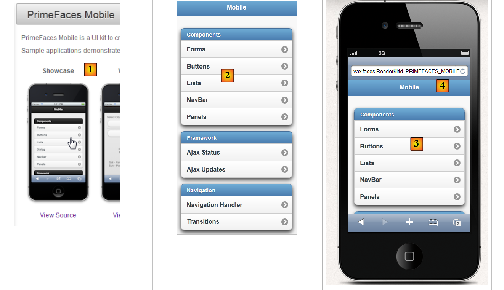
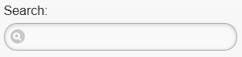
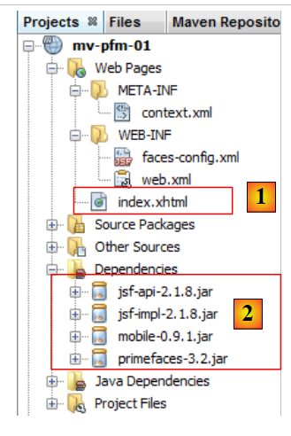
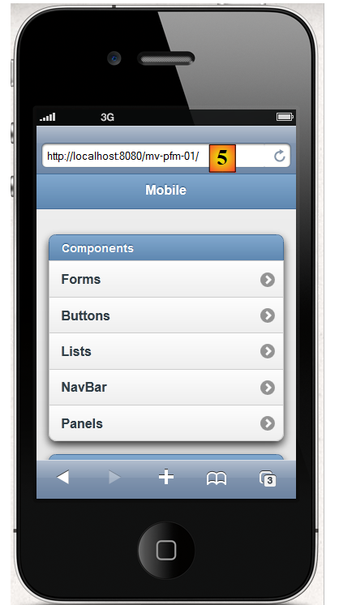
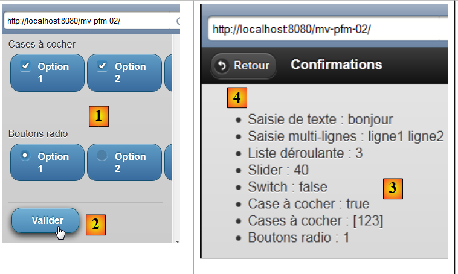
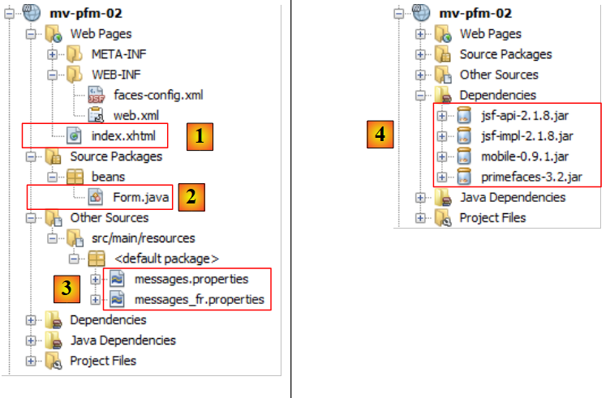
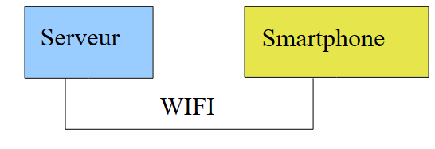

8. Introduction to PrimeFaces Mobile
8.1. The Role of PrimeFaces Mobile in a JSF Application
Let’s return to the architecture of a PrimeFaces application as we examined it at the beginning of this document:
 |
When the target is a mobile phone browser, we need to change the layout. Indeed, the size of a smartphone screen must be taken into account, and the usability of the pages redesigned. There are libraries specialized in building web pages for mobile devices. This is the case with the PrimeFaces Mobile library, which itself relies on the jQuery Mobile library.
The architecture of a mobile web application will be identical to the previous one, except that in addition to JSF and PrimeFaces, we will use the PrimeFaces Mobile (PFM) library.
 |
We will revisit all the concepts covered with JSF and PrimeFaces. Only the [presentation] layer (primarily the pages) will change.
8.2. The Benefits of PrimeFaces Mobile
The PrimeFaces Mobile website
[http://www.primefaces.org/showcase-labs/mobile/showcase.jsf?javax.faces.RenderKitId=PRIMEFACES_MOBILE]
provides a list of components that can be used in a PFM page [1, 2]:
 |
You can use smartphone simulators to view the demo application above. One of them is available for the iPhone 4 at the URL [http://iphone4simulator.com/] [3]. Enter the address of the application to be tested in [4], and it will be displayed at iPhone dimensions. Such simulators are useful during the development phase, but ultimately, the application must be tested in real-world conditions on various mobile devices.
8.3. Learning PrimeFaces Mobile
PrimeFaces Mobile offers far fewer components than PrimeFaces. The PrimeFaces Mobile website
[http://www.primefaces.org/showcase-labs/mobile/showcase.jsf?javax.faces.RenderKitId=PRIMEFACES_MOBILE]
provides a list of them. Here, for example, are the components that can be used in a form [1], [2], [3]:
 |
You can download the source code for the examples [4]. We find that the PFM page displaying the components [1], [2], [3] above is as follows:
<?xml version="1.0" encoding="windows-1250"?>
<f:view xmlns="http://www.w3.org/1999/xhtml"
xmlns:f="http://java.sun.com/jsf/core"
xmlns:h="http://java.sun.com/jsf/html"
xmlns:ui="http://java.sun.com/jsf/facelets"
xmlns:p="http://primefaces.org/ui"
xmlns:pm="http://primefaces.org/mobile"
contentType="text/html">
<pm:page title="Components">
<!-- Forms -->
<pm:view id="forms">
<pm:header title="Forms">
<f:facet name="left"><p:button value="Back" icon="back" href="#main?reverse=true"/></f:facet>
</pm:header>
<pm:content>
<p:inputText label="Input:" />
<p:inputText label="Search:" type="search"/>
<p:inputText label="Phone:" type="tel"/>
<p:inputTextarea id="inputTextarea" label="Textarea:"/>
<pm:field>
<h:outputLabel for="selectOneMenu" value="Dropdown: "/>
<h:selectOneMenu id="selectOneMenu">
<f:selectItem itemLabel="Select One" itemValue="" />
<f:selectItem itemLabel="Option 1" itemValue="Option 1" />
<f:selectItem itemLabel="Option 2" itemValue="Option 2" />
<f:selectItem itemLabel="Option 3" itemValue="Option 3" />
</h:selectOneMenu>
</pm:field>
<pm:inputRange id="range" minValue="0" maxValue="100" label="Range:" />
<pm:switch id="switch" onLabel="yes" offLabel="no" label="Switch:" />
<p:selectBooleanCheckbox id="booleanCheckbox" value="false" itemLabel="I agree" label="Checkbox"/>
<p:selectManyCheckbox id="checkbox" label="Checkboxes: ">
<f:selectItem itemLabel="Option 1" itemValue="Option 1" />
<f:selectItem itemLabel="Option 2" itemValue="Option 2" />
<f:selectItem itemLabel="Option 3" itemValue="Option 3" />
</p:selectManyCheckbox>
<p:selectOneRadio id="radio" label="Radios: ">
<f:selectItem itemLabel="Option 1" itemValue="Option 1" />
<f:selectItem itemLabel="Option 2" itemValue="Option 2" />
<f:selectItem itemLabel="Option 3" itemValue="Option 3" />
</p:selectOneRadio>
</pm:content>
</pm:view>
</pm:page>
</f:view>
- Line 7: A new namespace appears, that of the PrimeFaces Mobile components with the prefix pm,
- line 10: defines a page. A page will consist of several views (line 12). Only one view is visible at any given time. This is a concept we’ve used extensively in our PrimeFaces examples: a single page with multiple fragments that can be shown or hidden. Here, we won’t have to do that. We will simply designate the view to display, with the others automatically hidden,
- line 12: a view,
- lines 13–15: define the view header:
<pm:header title="Forms">
<f:facet name="left"><p:button value="Back" icon="back" href="#main?reverse=true"/></f:facet>
</pm:header>
Note the tag used to generate a button. The href attribute enables navigation. Its value here is the name of a view. Clicking the button will take you back (reverse=true) to the view named main (not shown here).
- line 16: introduces the view's content,
- line 17: generates an input field:
<p:inputText label="Input:" />
 |
- line 18: an input field with a specific icon:
<p:inputText label="Search:" type="search"/>
 |
- line 19: an input field for a phone number:
<p:inputText label="Phone:" type="tel"/>
 |
The type attribute of an <inputText> tag has a specific meaning: it determines the type of keyboard presented to the user for data entry. Thus, for type='tel', a numeric keyboard will be displayed,
- line 20: a multi-line, expandable text input field:
<p:inputTextarea id="inputTextarea" label="Textarea:"/>
 |
- Lines 21–29: a field combining several components:
<pm:field>
<h:outputLabel for="selectOneMenu" value="Dropdown: "/>
<h:selectOneMenu id="selectOneMenu">
<f:selectItem itemLabel="Select One" itemValue="" />
<f:selectItem itemLabel="Option 1" itemValue="Option 1" />
<f:selectItem itemLabel="Option 2" itemValue="Option 2" />
<f:selectItem itemLabel="Option 3" itemValue="Option 3" />
</h:selectOneMenu>
</pm:field>
 |  |
- line 2: the label for the component on line 3;
- line 3: a drop-down list;
- lines 4–7: its content;
- line 30: a slider:
<pm:inputRange id="range" minValue="0" maxValue="100" label="Range:" />
 |
- line 31: a toggle button:
<pm:switch id="switch" onLabel="yes" offLabel="no" label="Switch:" />
 |  |
- line 32: a checkbox:
<p:selectBooleanCheckbox id="booleanCheckbox" value="false" itemLabel="I agree" label="Checkbox"/>
 |
- lines 33-37: a group of checkboxes:
<p:selectManyCheckbox id="checkbox" label="Checkboxes: ">
<f:selectItem itemLabel="Option 1" itemValue="Option 1" />
<f:selectItem itemLabel="Option 2" itemValue="Option 2" />
<f:selectItem itemLabel="Option 3" itemValue="Option 3" />
</p:selectManyCheckbox>
 |
- Lines 38–42: a group of radio buttons
<p:selectOneRadio id="radio" label="Radios: ">
<f:selectItem itemLabel="Option 1" itemValue="Option 1" />
<f:selectItem itemLabel="Option 2" itemValue="Option 2" />
<f:selectItem itemLabel="Option 3" itemValue="Option 3" />
</p:selectOneRadio>
 |
Note that the page uses tags from the three libraries: JSF, PF, and PFM. We now know enough to build our first PrimeFaces Mobile project.
8.4. A First PrimeFaces Mobile Project: mv-pfm-01
We will revisit the example studied earlier to integrate it into a Maven project. This will allow us to explore the dependencies required for a PrimeFaces Mobile project.
8.4.1. The NetBeans Project
The NetBeans project is as follows:
 |
The NetBeans project starts as a basic Maven web project to which the dependencies [2] have been added. This is reflected in the [pom.xml] file with the following code:
<dependency>
<groupId>com.sun.faces</groupId>
<artifactId>jsf-impl</artifactId>
<version>2.1.8</version>
</dependency>
<dependency>
<groupId>org.primefaces</groupId>
<artifactId>primefaces</artifactId>
<version>3.2</version>
</dependency>
<dependency>
<groupId>org.primefaces</groupId>
<artifactId>mobile</artifactId>
<version>0.9.1</version>
<type>jar</type>
</dependency>
</dependencies>
<repositories>
<repository>
<url>http://download.java.net/maven/2/</url>
<id>jsf20</id>
<layout>default</layout>
<name>Repository for library Library[jsf20]</name>
</repository>
<repository>
<url>http://repository.primefaces.org/</url>
<id>primefaces</id>
<layout>default</layout>
<name>Repository for library Library[primefaces]</name>
</repository>
</repositories>
In lines 11–16, the dependency on PrimeFaces Mobile. Here we’ve used version 0.9.1 (line 14). Additionally, we’ve used version 3.2 of PrimeFaces (line 9). These version numbers are important. In fact, I encountered quite a few issues with PFM, which is an unfinished library. For a while, there was a version 0.9.2 that was buggy. It has since been removed. We have reverted to version 0.9.1. The PFM project has thus regressed. Tests also failed with the 1.0-SNAPSHOT version of the upcoming 1.0 release (early June 2012).
The home page [index.xhtml] [1] is the demo page for PrimeFaces Mobile components:
<?xml version="1.0" encoding="windows-1250"?>
<f:view xmlns="http://www.w3.org/1999/xhtml"
xmlns:f="http://java.sun.com/jsf/core"
xmlns:h="http://java.sun.com/jsf/html"
xmlns:ui="http://java.sun.com/jsf/facelets"
xmlns:p="http://primefaces.org/ui"
xmlns:pm="http://primefaces.org/mobile"
contentType="text/html">
<pm:page title="Components">
<!-- Main View -->
<pm:view id="main">
...
</pm:view>
<!-- Forms -->
<pm:view id="forms">
...
</pm:view>
<!-- Buttons -->
<pm:view id="buttons">
...
</pm:view>
...
</pm:page>
</f:view>
There is a single page (line 10) consisting of twelve views. We won’t go into detail about them here. The goal here is simply to show how to build a PrimeFaces Mobile project.
Let’s run this project. We get an error page [1]:
 |
The reason is that a PrimeFaces Mobile application must be called with the parameter [?javax.faces.RenderKitId=PRIMEFACES_MOBILE] as shown in [2]. You can bypass this parameter by modifying the [faces-config.xml] file (or creating it if it doesn’t exist, as in this case) [3]:
 |
Its content is as follows:
<?xml version='1.0' encoding='UTF-8'?>
<!-- =========== FULL CONFIGURATION FILE ================================== -->
<faces-config version="2.0"
xmlns="http://java.sun.com/xml/ns/javaee"
xmlns:xsi="http://www.w3.org/2001/XMLSchema-instance"
xsi:schemaLocation="http://java.sun.com/xml/ns/javaee http://java.sun.com/xml/ns/javaee/web-facesconfig_2_0.xsd">
<application>
<default-render-kit-id>PRIMEFACES_MOBILE</default-render-kit-id>
</application>
</faces-config>
- Line 11: sets the value of the [javax.faces.RenderKitId] parameter.
Upon execution, we get the same page as before but without having to include a parameter in the URL [4]. We leave it to the reader to test this application. We discover some bugs: the <p:selectManyCheckbox> tag does not display, nor does the <p:selectOneRadio> tag, and the <pm:range> tag does not work. These issues, which do not exist on the demo site, suggest that the demo does not work with the combination used here of PrimeFaces Mobile 0.9.1 and PrimeFaces 3.2. Nevertheless, it serves as a starting point for exploring the tags in this library, which is still under development.
To get a more realistic rendering, you can test the application on a simulator like the iPhone 4 simulator [http://iphone4simulator.com/]. You get the following:
 |
Enter [5], the same URL used by the previous browser in [4].
8.5. Example mv-pfm-02: Form and Model
In this project, we demonstrate the interactions between a PrimeFaces Mobile page and its model. These interactions follow the rules of the JSF framework, upon which PrimeFaces Mobile is ultimately based.
8.5.1. The views
There are two views in the project
 |
- View 1 [1] displays a form that can be submitted [2],
- View 2 [3] confirms the entries and offers the option to return to the form [4].
The project demonstrates two things:
- the relationship between a page and its template,
- navigation between views on the page.
8.5.2. The NetBeans project
The NetBeans project is as follows:
 |
- in [1], the PrimeFaces Mobile page,
- in [2], its template
- in [3], the message files, since the application is internationalized,
- in [4], the project dependencies.
8.5.3. Project configuration
We provide the configuration files without explaining them. They are now standard.
[web.xml]: configures the web application:
<?xml version="1.0" encoding="UTF-8"?>
<web-app version="3.0" xmlns="http://java.sun.com/xml/ns/javaee" xmlns:xsi="http://www.w3.org/2001/XMLSchema-instance" xsi:schemaLocation="http://java.sun.com/xml/ns/javaee http://java.sun.com/xml/ns/javaee/web-app_3_0.xsd">
<context-param>
<param-name>javax.faces.PROJECT_STAGE</param-name>
<param-value>Development</param-value>
</context-param>
<servlet>
<servlet-name>Faces Servlet</servlet-name>
<servlet-class>javax.faces.webapp.FacesServlet</servlet-class>
<load-on-startup>1</load-on-startup>
</servlet>
<servlet-mapping>
<servlet-name>Faces Servlet</servlet-name>
<url-pattern>/faces/*</url-pattern>
</servlet-mapping>
<session-config>
<session-timeout>
30
</session-timeout>
</session-config>
<welcome-file-list>
<welcome-file>faces/index.xhtml</welcome-file>
</welcome-file-list>
</web-app>
[faces-config.xml]: configures the JSF application:
<?xml version='1.0' encoding='UTF-8'?>
<!-- =========== FULL CONFIGURATION FILE ================================== -->
<faces-config version="2.0"
xmlns="http://java.sun.com/xml/ns/javaee"
xmlns:xsi="http://www.w3.org/2001/XMLSchema-instance"
xsi:schemaLocation="http://java.sun.com/xml/ns/javaee http://java.sun.com/xml/ns/javaee/web-facesconfig_2_0.xsd">
<application>
<resource-bundle>
<base-name>
messages
</base-name>
<var>msg</var>
</resource-bundle>
<message-bundle>messages</message-bundle>
<default-render-kit-id>PRIMEFACES_MOBILE</default-render-kit-id>
</application>
</faces-config>
[messages_fr.properties]: the French message file:
forms=Formulaire
input=Saisie de texte
textarea=Saisie multi-lignes
dropdown=Liste d\u00e9roulante
range=Slider
switch=Switch
checkbox=Case \u00e0 cocher
checkboxes=Cases \u00e0 cocher
radios=Boutons radio
valider=Valider
confirmations=Confirmations
back=Retour
8.5.4. The Primefaces mobile page
The [index.xhtml] page is as follows:
<?xml version="1.0" encoding='UTF-8'?>
<f:view xmlns="http://www.w3.org/1999/xhtml"
xmlns:f="http://java.sun.com/jsf/core"
xmlns:h="http://java.sun.com/jsf/html"
xmlns:ui="http://java.sun.com/jsf/facelets"
xmlns:p="http://primefaces.org/ui"
xmlns:pm="http://primefaces.org/mobile"
contentType="text/html">
<pm:page title="mv-pfm-02">
<!-- forms view -->
<pm:view id="forms" swatch="b">
<pm:header title="#{msg['forms']}"/>
<pm:content>
<h:form id="formulaire">
<p:inputText id="inputText" label="#{msg['input']}" value="#{form.inputText}"/>
<p:inputTextarea id="inputTextArea" label="#{msg['textarea']}" value="#{form.inputTextArea}"/>
<pm:field>
<h:outputLabel for="selectOneMenu" value="#{msg['dropdown']}"/>
<h:selectOneMenu id="selectOneMenu" value="#{form.selectOneMenu}">
<f:selectItem itemLabel="Option 1" itemValue="1" />
<f:selectItem itemLabel="Option 2" itemValue="2" />
<f:selectItem itemLabel="Option 3" itemValue="3" />
</h:selectOneMenu>
</pm:field>
<pm:inputRange id="range" minValue="0" maxValue="100" label="#{msg['range']}" value="#{form.range}"/>
<pm:switch id="switch" onLabel="yes" offLabel="no" label="#{msg['switch']}" value="#{form.bswitch}"/>
<p:selectBooleanCheckbox id="booleanCheckbox" itemLabel="I agree" label="#{msg['checkbox']}" value="#{form.booleanCheckbox}"/>
<pm:field>
<h:outputLabel for="manyCheckbox" value="#{msg['checkboxes']}"/>
<h:selectManyCheckbox id="manyCheckbox" value="#{form.manyCheckbox}">
<f:selectItem itemLabel="Option 1" itemValue="1" />
<f:selectItem itemLabel="Option 2" itemValue="2" />
<f:selectItem itemLabel="Option 3" itemValue="3" />
</h:selectManyCheckbox>
</pm:field>
<pm:field>
<h:outputLabel for="radio" value="#{msg['radios']}"/>
<h:selectOneRadio id="radio" value="#{form.radio}">
<f:selectItem itemLabel="Option 1" itemValue="1" />
<f:selectItem itemLabel="Option 2" itemValue="2" />
<f:selectItem itemLabel="Option 3" itemValue="3" />
</h:selectOneRadio>
</pm:field>
<p:commandButton inline="true" value="#{msg['valider']}" update=":infos" action="#{form.valider}"/>
</h:form>
</pm:content>
</pm:view>
<!-- info view -->
<pm:view id="infos" swatch="b">
<pm:header title="#{msg['confirmations']}">
<f:facet name="left"><p:button value="#{msg['back']}" icon="back" href="#forms?reverse=true"/></f:facet>
</pm:header>
<pm:content>
<ul>
<li>#{msg['input']} : ${form.inputText}</li>
<li>#{msg['textarea']} : ${form.inputTextArea}</li>
<li>#{msg['dropdown']} : ${form.selectOneMenu}</li>
<li>#{msg['range']} : ${form.range}</li>
<li>#{msg['switch']} : ${form.bswitch}</li>
<li>#{msg['checkbox']} : ${form.booleanCheckbox}</li>
<li>#{msg['checkboxes']} : ${form.manyCheckboxValue}</li>
<li>#{msg['radios']} : ${form.radio}</li>
</ul>
</pm:content>
</pm:view>
</pm:page>
</f:view>
We took the demo example from the PrimeFaces Mobile website and modified it to make it work:
- the <p:selectManyCheckbox> tag was not displayed. We replaced it with an <h:selectManyCheckbox> tag (line 32),
- the <p:selectOneRadio> tag was not displayed. We replaced it with a <p:selectOneRadio> tag (line 40),
- line 27: we kept the <pm:inputRange> tag, which displays a slider. This slider has a bug: you cannot move the slider’s cursor. However, you can enter a number that causes it to move,
- Note that there are few tags specific to PFM (lines 13, 14, 15, 19, 27, and 28 in the first view). The other tags are standard JSF and PF tags. PrimeFaces Mobile is based on these two frameworks.
Note the page structure:
<?xml version="1.0" encoding='UTF-8'?>
<f:view xmlns="http://www.w3.org/1999/xhtml"
xmlns:f="http://java.sun.com/jsf/core"
xmlns:h="http://java.sun.com/jsf/html"
xmlns:ui="http://java.sun.com/jsf/facelets"
xmlns:p="http://primefaces.org/ui"
xmlns:pm="http://primefaces.org/mobile"
contentType="text/html">
<pm:page title="mv-pfm-02">
<!-- forms view -->
<pm:view id="forms" swatch="b">
<pm:header ...>
<pm:content>
<h:form id="formulaire">
...
<p:commandButton inline="true" value="#{msg['valider']}" update=":infos" action="#{form.valider}"/>
</h:form>
</pm:content>
</pm:view>
<!-- info view -->
<pm:view id="infos" swatch="b">
<pm:header title="#{msg['confirmations']}">
<f:facet name="left"><p:button value="#{msg['back']}" icon="back" href="#forms?reverse=true"/></f:facet>
</pm:header>
<pm:content>
...
</pm:content>
</pm:view>
</pm:page>
</f:view>
- line 10: defines a PFM page. The title attribute sets the title displayed by the browser;
- a page consists of one or more views. When the page is first displayed, the first view is shown. Then, you navigate from one view to another. Here, there are two views: forms on line 13 and info on line 24,
- line 14: the header tag defines the header of a view,
- line 15: the content tag defines the content of a view,
- line 16: the forms view contains a JSF form,
- line 18: this form will be submitted via a standard PrimeFaces button. The form will be posted to the [Form] model and processed by the [Form].validate method. This method will do its job. We’ll see that it requests the display of the info view. Prior to this, the view will have been updated via an AJAX call (update attribute),
- line 26: we can switch from the infos view to the forms view using a button. Note the format of the href attribute [href="#forms?reverse=true"]. The notation #forms refers to the forms view. The parameter reverse=true requests a return to the previous page. I took this attribute from the demo. When you remove it, you don’t see any difference on a simulator... Perhaps there is one on real smartphones,
- finally, note the use of the PrimeFaces Mobile library on line 7.
Even though it introduces new features, this PFM page is quite straightforward. The same applies to its template [Form.java].
8.5.5. The [Form.java] template
This model is as follows:
package beans;
import java.io.Serializable;
import javax.faces.bean.ManagedBean;
import javax.faces.bean.SessionScoped;
@ManagedBean
@SessionScoped
public class Form implements Serializable {
// model
private String inputText = "bonjour";
private String inputTextArea = "ligne1\nligne2";
private String selectOneMenu = "2";
private int range = 4;
private boolean bswitch = true;
private boolean booleanCheckbox = false;
private String[] manyCheckbox = {"1", "3"};
private String radio = "3";
public String valider() {
// we move on to the news view
return "pm:infos";
}
public String getManyCheckboxValue() {
StringBuffer str = new StringBuffer("[");
for (String checkbox : manyCheckbox) {
str.append(checkbox);
}
str.append("]");
return str.toString();
}
// getters and setters
...
}
There is nothing new here. We’ve seen it all before. Note, however, the form of the validate method called by the form. Line 21: it returns a string in the form 'pm:viewname'. Here, the info view will be displayed. The method does nothing other than this navigation. Previously, the fields in lines 12–19 received the posted values. These will be used to update the infos view (update attribute below):
<p:commandButton inline="true" value="#{msg['valider']}" update=":infos" action="#{form.valider}"/>
The info view will then display the posted values:
 |
<pm:view id="infos" swatch="b">
<pm:header title="#{msg['confirmations']}">
<f:facet name="left"><p:button value="#{msg['back']}" icon="back" href="#forms"/></f:facet>
</pm:header>
<pm:content>
<ul>
<li>#{msg['input']} : ${form.inputText}</li>
<li>#{msg['textarea']} : ${form.inputTextArea}</li>
<li>#{msg['dropdown']} : ${form.selectOneMenu}</li>
<li>#{msg['range']} : ${form.range}</li>
<li>#{msg['switch']} : ${form.bswitch}</li>
<li>#{msg['checkbox']} : ${form.booleanCheckbox}</li>
<li>#{msg['checkboxes']} : ${form.manyCheckboxValue}</li>
<li>#{msg['radios']} : ${form.radio}</li>
</ul>
</pm:content>
</pm:view>
8.5.6. Test
Run the NetBeans project. Once the project is deployed on Tomcat [1], you can test it on a simulator [http://iphone4simulator.com/] [2]:
 |
We will now show how to test it on a real smartphone . We will connect the server hosting the application and the smartphone to the same Wi-Fi network:
 |
Connect the server to the Wi-Fi network. You can then check its IP address:
 |
Note the server's IP address above: 192.168.1.127. Disable any firewalls and antivirus software on the server:
 |
On the server, launch the [mv-pfm-02] application in NetBeans [1]:
 |
Connect the smartphone to the same Wi-Fi network as the server so that the two devices can see each other. Then open a browser and enter the URL [http://192.168.1.127:8080/mv-pfm-02/] [2]. You can now test the application. You’ll be pleased to discover that the slider, which doesn’t work in the simulator, works on the smartphone. There is therefore a discrepancy between simulators and actual devices.
8.6. Conclusion
We have only covered the form tags from the PrimeFaces Mobile library, but that is sufficient for our example application.
8.7. Testing with Eclipse
Import the Maven projects [1] into Eclipse and run them [2],
 |
on the Tomcat server [3]. The running application then appears in Eclipse’s internal browser [4].
 |
Note that the application [mv-pfm-02] exhibited malfunctions in the Eclipse browser. When loaded in Firefox or IE browsers, these issues disappeared.